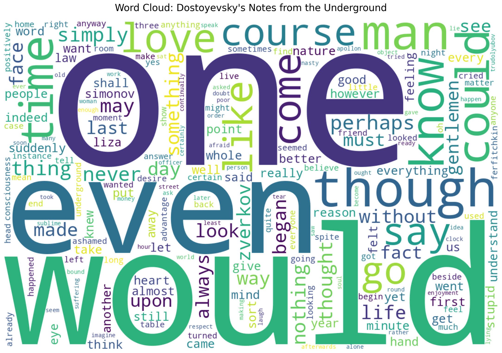

Project Overview
This distant reading analysis examines three influential works exploring themes of society, individuality, and utopian ideals:
Dostoyevsky's Notes from the Underground
A psychological novella exploring consciousness, free will, and alienation in modern society.
Chernyshevsky's What Is To Be Done?
A radical novel depicting rational egoism and socialist ideals through the lives of revolutionary characters.
Wells' A Modern Utopia
A philosophical discourse presenting a utopian society based on scientific rationalism and global governance.
Key Insights
Analysis Methods
- VADER Sentiment Analysis: Document-level positive/negative sentiment scoring
- Vocabulary Richness: Type-Token Ratio and lexical diversity metrics
- Dialogue vs. Narrative: Ratio analysis of quoted dialogue to narrative text
- Word Frequency Analysis: Most common words (stopwords excluded)
Dostoyevsky's Notes from the Underground
Word Cloud
Chernyshevsky's What Is To Be Done?
Word Cloud